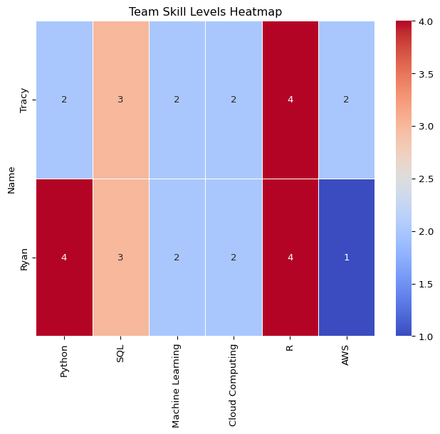

| Python | SQL | Machine Learning | Cloud Computing | R | AWS | |
|---|---|---|---|---|---|---|
| Name | ||||||
| Tracy | 2 | 3 | 2 | 2 | 4 | 2 |
| Ryan | 4 | 3 | 2 | 2 | 4 | 1 |
Team Members’ Skill Proficiency Levels
A numerical scale (1-5) to indicate proficiency levels:
- 1 = Beginner
- 2 = Basic Knowledge
- 3 = Intermediate
- 4 = Advanced
- 5 = Expert
Team Skill Levels Heatmap

Job Market vs. Team Skill Coverage
| Python | SQL | Machine Learning | Cloud Computing | R | AWS | Docker | |
|---|---|---|---|---|---|---|---|
| Name | |||||||
| Tracy | 2 | 3 | 2 | 2 | 4 | 2 | 0 |
| Ryan | 4 | 3 | 2 | 2 | 4 | 1 | 0 |
Comparing Team Skills to Industry Requirements
Working in the IT department requires a diverse set of skills that Ryan and Tracy will need to to develop to meet industry standards. The top skills in this line of work include experience with python, SQL, Machine Learning, Cloud Computing, R, Docker, and AWS. While Ryan has solid experience with Python, SQL, and R, Tracy has only limited experience with Python. Both need to improve their proficiency in Machine Learning, Cloud Computing, and AWS while familiarizing themselves with Docker, where they currently have no experience.
Improvement Plan
Although there is room for improvement in Python, SQL, and R skills, Ryan should prioritize enhancing his efficiency in Machine Learning, Cloud Computing, AWS, and Docker to achieve a well-rounded skill set. The same can be said for Tracy, who can also work on improving her efficiency with Python. Both individuals have similar skill gaps, but Ryan’s experience with Python can be leveraged to help Tracy with future challenges. Ryan can review Tracy’s Python code, providing feedback to help her write cleaner and more efficient code. Given both Ryan’s and Tracy’s other skill sets, using recommended resources will be essential in further developing their abilities.
A valuable platform to improve and familiarize oneself with these topics is DataCamp, an online learning platform that helps aspiring data analysts and engineers learn data analytics through engaging activities. The platform offers several resources for learning data analysis, such as webinars, code-alongs, tutorials, blogs, and podcasts. DataCamp is also designed to accommodate individuals at different levels, offering courses for beginners, intermediate, and advanced learners. The website provides courses in Python, R, Cloud Computing, AWS, and Docker—topics that Ryan and Tracy are seeking to improve in.
Another resource to consider is Fullstack Academy, an online bootcamp for data analytics. The bootcamp helps individuals gain the skills needed to advance their career paths in coding, data analytics, AI, and Machine Learning, with the promise that students will develop their skills in 26 weeks. The data analytics bootcamp at Fullstack offers students a live online classroom environment that includes live instruction, exercises, and team projects. The curriculum covers data analytics with Excel, SQL, and Python, while also addressing the latest essentials of generative AI. This platform would provide Ryan and Tracy with essential building blocks to further their coding skills.